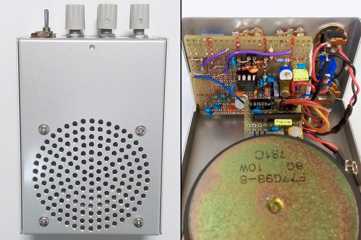
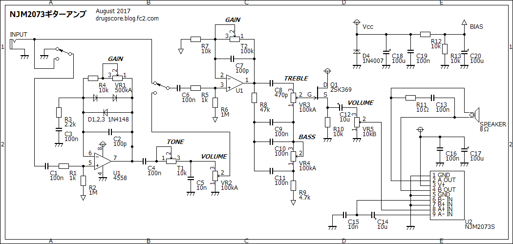
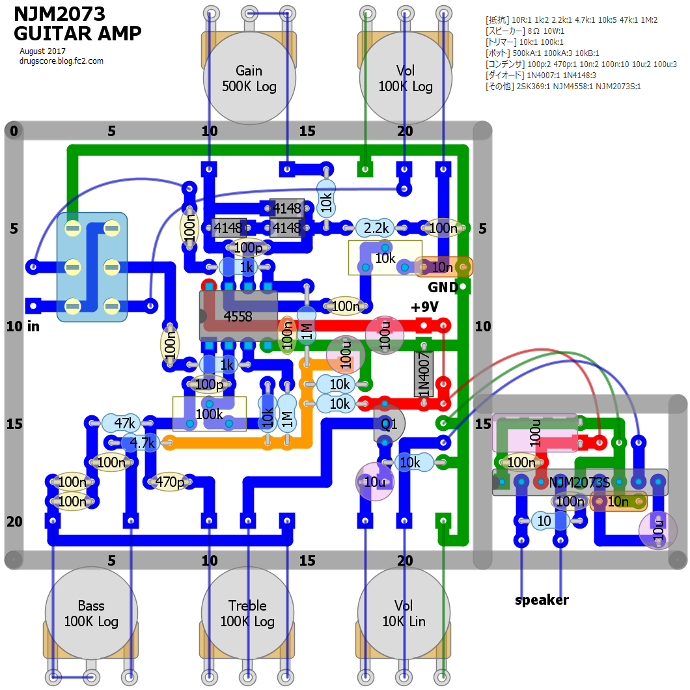
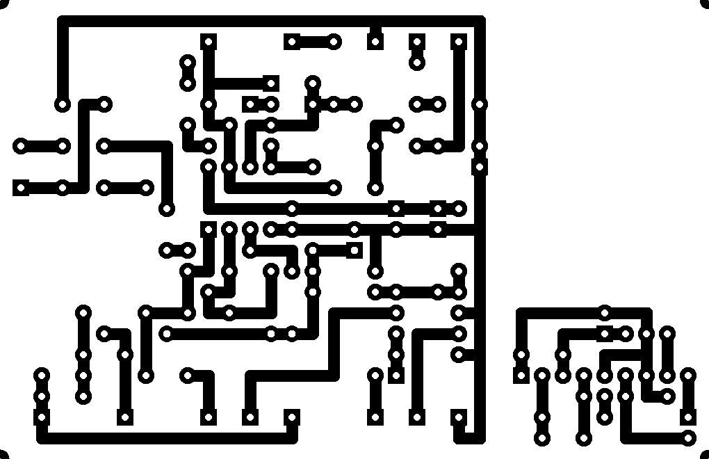

NJM2073ギターアンプ
2017年08月01日 カテゴリー：ギターアンプ・ベースアンプ

ミニギターアンプとしてはLM386を使用したスモーキーアンプが有名です。私も自作したものを使っていたのですが、大きい音を出そうとするとどうしても歪んでしまいます。そこで、ある程度大きいクリーン音が出るミニアンプを自作することにしました。一応ミニサイズということで、卓上に置けて9V電池駆動可能なものにします。
まず電力効率がよいD級アンプを考え、PAM8408というICを試しました。しかしギターを繋いでみると、過大入力時にミュートがかかるらしく音が途切れ途切れになりうまくいきませんでした。他にもいろいろとD級アンプICはありますが、新たに購入するのが面倒だったので、昔何かのついでに買っていたNJM2073Sを使うことにしました。
NJM2073は、LM386と同程度のゲイン・出力の回路が2つ入っているパワーアンプICです。TDA2822という互換品もあります。BTL動作だと9V、8Ω負荷で3W以上出力がありそうです。スピーカーは出力に余裕があるものがよいだろうと思い、秋月電子の8Ω10Wのものにしました。
▽回路図

簡単なオーバードライブ回路を前段に入れてスイッチで切り替えるようにしています（※トーンを上げすぎると発振するかもしれません）。プリアンプ部分は単なるフェンダー型トーン回路です。NJM2073の電圧利得が高い(+44dB)ため、ゲインはあまり上げなくても大丈夫だと思います。
パワーアンプは今後変更するかもしれないので別基板にしました。通常、出力には発振防止のための抵抗とコンデンサ（Zobelフィルタというらしい）を入れます。データシートでは抵抗が1Ωですが、歪みやすい気がしたので10Ωにしました。コンデンサはありあわせの100nFですが問題ないようです。NJM2073「S」（SIP9ピンパッケージ）は生産中止品で、「D」（DIP8ピン）とピン番号が違うので間違えやすいです。
▽レイアウト

▽PCB

ケースはタカチMB-3（90×60×125mm）です。スピーカー部分の穴あけ精度はイマイチですが、円状なのでそれほどズレが気になりません。意外と内部スペースがあるので、スピーカーの配置は真ん中でもよかった気がします。
どのくらいの音量かマイク録音して調べてみました。クリーン音のまま出せる音量は、ドレッドノートサイズのアコギをストロークしたときと大体同じくらいでした。歪むくらい音量を上げていくと、ケース自体が振動してジワジワ移動し始めます。大きい音を出すには、やはり頑丈なケースが必要となるようです。まぁそれなりの音量でクリーン音が出すという目的は達成できました。今後テスト用アンプとして使っていく見込みです。